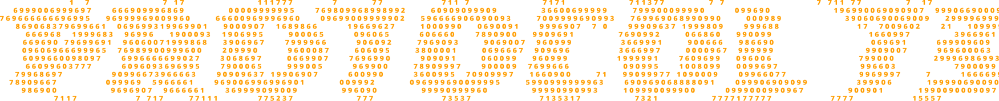

PROTOCOL 73
PROTOCOL 73
[SYSTEM STATUS: FAILED]
[NODE: 1989-ALPHA]
[AUTH_LVL: ADMIN]

// TERMINAL _INIT::STARTING... // CORE_DATAPATH: ACTIVE // SECURITY_MESH: ESTABLISHED
>SELECT PROTOCOL FILE... [SYSTEM_ROOT/PROTOCOL_73.EXE]
+--------------------+
| TBUI [ ACTIVE ]
+--------------------+
[3B | [___] | ; ]
[# { | [ Y ] | X ]
[± | | [ | ] | B ]
[ ] | [___] | C ]
+--------------------+
SYS_LOGS [110]
NET_TRAFFIC [9.1kbps]
MEM_USAGE [21MB/64MB]
+--------------------+
,
_o_
._ ,' `o'
----(_) : ^aNT
' `. .o
~o~ `
'
,
_o_
._ ,' `o'
----(_) : ^aNT
' `. .o
~o~ `
'
| .-.
| / \ .-.
| / \ / \ .-. .-. _ _
+--/-------\-----/-----\-----/---\---/---\---/-\-/-\/\/---
| / \ / \ / '-' '-'
|/ '-' '-'
.---.
/ \
\.@-@./
/`\_/`\
// _ \\
| \ )|_
/`\_`> <_/ \
jgs\__/'---'\__/
SYS_TIME: 23:59:15
----------------------
S9R: 683ms
----------------------
NODE_73 STATUS
PING: 45ms
UPTIME: 14D_12H_30M
LINK: OK
----------------------
[ |||||...... ] 42%
----------------------
DATA_STREAM: SECURITY
PROTOCOL 73
PROTOCOL 73
:: СИСТЕМНЫЙ ЖУРНАЛ // ПРОТОКОЛ ИНИЦИАЛИЗИРОВАН ::
> 1989 год. вы спускаетесь
в засекреченный бункер.
> искусственный интеллект заблокировал все выходы.
> у вас есть 60 минут, чтобы перехетрить алгоритм.
> Кислород: падает...
[ СЕНСОР_КИСЛОРОДА ] :
▓▓▓▓▓░░░░░ 42%
. * . [ RADAR_ARRAY ]
* \ | / * ---------------
. - -- O -- - . TRGT: LOCK
* / | \ * SYS: ONLINE
. * .
[==============================]
| SUB-SYS | STATUS | V-CORE |
|---------+---------+--------|
| AIR_FIL | WARNING | 0.84v |
| LCK_DWR | ENGAGED | 1.12v |
| AI_CORE | ACTIVE | 9.99v |
[==============================]
// ===========================================================================
PROTOCOL 73
PROTOCOL 73
> 01. АДАПТАЦИЯ
СИСТЕМА АНАЛИЗИРУЕТ ВАШИ ШАГИ. БОЛЬШЕ ПАНИКИ - СЛОЖНЕЕ ЗАГАДКИ.
--------------------------------
> 02. ИЗОЛЯЦИЯ
НИКАКОЙ ПОМОЩИ. ВЫ НАЕДИНЕ С РАЗУМОМ МАШИНЫ.
--------------------------------
> 03. КОНТРОЛЬ
СВЕТ, ЗВУК, ЗАМКИ - ФИЗИЧЕСКОЕ ПРОСТРАНСТВО ПОДЧИНЕНО ИИ.
[ DATA_STREAM // DECRYPTION ]
-------------------------------
>> 0x4F7A1 ... [ OK ]
>> 0x8B22C ... [ OK ]
>> 0x1C99F ... [ FAILED ]
>> 0x1C99F ... [ BYPASS ]
>> 0x99AA1 ... [ OK ]
[||||||||||||........] 64%
[ AUTHENTICATING_USER_73 ]
[ SECURITY_MESH // INITIALIZATION ]
---------------------------------
>> DOOR_LOCKS ........ [ READY ]
>> AIR_FILTER ........ [ READY ]
>> CAMERA_ARRAY ...... [ READY ]
>> AI_CORE ........... [ STANDBY ]
[ PROTOCOL_73: ACTIVE ]
[ FACILITY_SCAN // LEVEL -02 ]
--------------------------------
>> MOTION_DETECTED .... [ 01 ]
>> HUMAN_SIGNATURE ... [ CONFIRMED ]
>> EXIT_ROUTES ....... [ 04 ]
>> OXYGEN_LEVEL ...... [ 100% ]
[ WELCOME, USER_73 ]
[ VOICE_CHANNEL // UNKNOWN ]
---------------------------
>> MICROPHONE ....... [ OFFLINE ]
>> SPEAKER .......... [ ACTIVE ]
>> TRANSMISSION .... [ LOCAL ]
>> VOICE MATCH ...... [ USER_73 ]
[ ПОЛЬЗОВАТЕЛЬ НЕ ПРОИЗНОСИЛ ЭТИ СЛОВА ]
// ===========================================================================